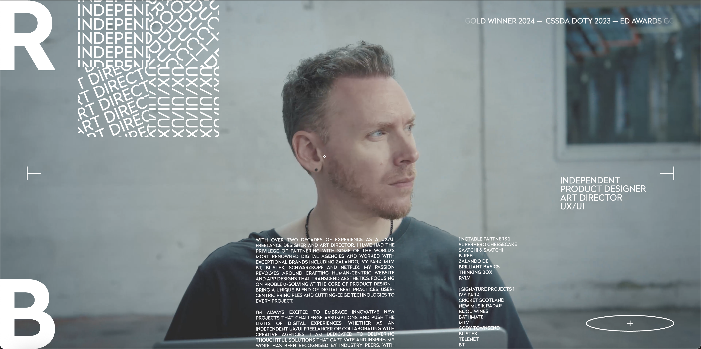
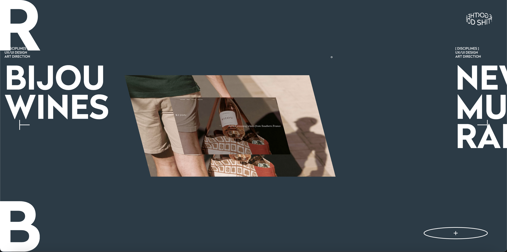
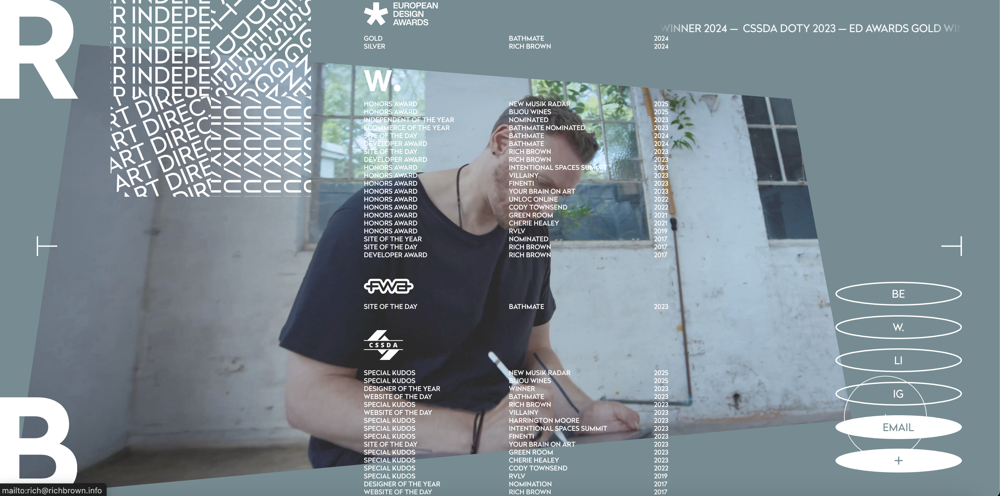

1) What was the first thing you paid attention to when interacting with the experience?
when first entering Rich Brown’s portfolio website, I paid attention to the interactivity of the website and how the elements were reacting to the action of scrolling up and down. I noticed how the text moved dynamically alongside the scrolling action, and there was a constantly moving text in the top right corner of the screen, reminiscent of an LED ticker display.

2) Spend two minutes with the experience and create a list of each of your discrete actions.
Watch my 2 minute Interaction3) What part of the experience did you spend the most time engaging with?
I spent the most time engaging with the portfolio section of Rich Browns website, where I viewed and read his past works. I loved the fluid-like motion that the videos and text performed as you scroll along. Most of the portfolio pages were predominantly full of videos displaying Brown’s work which works really well in keeping the audience engaged.

4) What was the most common action in your two-minute interaction with the experience?
The most common action in my 2-minute experience with Brown’s portfolio was scrolling. My engagement was also maintained through different elements I could click on, and the unique movements of the text and videos within the webpage. Horizontal scrolling was also introduced to present Brown’s work.
5) What is your impression of the intended primary goal of the interactive experience?
My impression is that Rich Brown uses his portfolio website to gain clientele. He utilises type to distinguish his roles in the design field. Emphasising the unique style of intractability and engagement he brings to webpages and other experiences proves to leave a lasting impression of his work. Another indication that his website is used to advertise his abilities includes the presentation of the awards he has received shortly from the top of the page.
6) How does the interactive experience communicate this primary goal?
Brown uses interactions like scrolling, clicking and mouse hovering in unique ways to intrigue the audience and promote his design abilities. He also places prominence on the list of awards he has received along with the large archive of previous work from his career.

7) What is your impression of how the experience should be interacted with over time? (For how long and how many different times)
I judge that the experience is used as Rich Brown’s freelance showcase, which will most likely be viewed during the process of hiring or collaborating with designers for a project. He puts focus on the visually appealing elements to keep engagement throughout the experience, resulting in less text displaying his processes through his work. This indicates that the website is intended to be viewed over a short amount of time, and most likely a maximum of a couple of times.
8) How does the interactive experience communicate how it should be interacted with over time?
The effort of work is being directed heavily to the visuals of the experience and less to the text, process-based explanations proving that the experience would most likely be viewed in a short amount of time. Brown aims to evoke enthusiasm and engagement within the audience over this short period of time to leave a lasting impression when compared to other designers.
9) What other media forms (digital or otherwise) does the experience reference?
Rich Brown mainly focuses on displaying his UI/UX design, but also showcases his work in product design and art direction.
10) What does this reference/s communicate to you about how you should act when engaging with your research experience?
Opening the page, the introductory text giving a brief understanding of Rich Brown’s work is placed partially out of view at the bottom of the screen. This indicates that the main method of travelling across the website is scrolling. When hovering the mouse over certain elements, the circle shape of the mouse cursor grows in size, implying that it can be clicked for more information.
11) What does this reference/s communicate to you about how you should feel when engaging with your research experience?
The strong emphasis on visual elements and interactivity within the experience aims to inspire and influence consideration of hiring or collaborating with Rich Brown on projects.
12) What is the most frustrating part of the interaction to you, and what makes that part frustrating?
The most frustrating part of the experience was that the reload button in the top left of the screen wasn’t too clear as to what it did. I believe this button could’ve served a greater purpose than just reloading the page.
13) What is the most satisfying part of the interaction to you and what makes that part satisfying?
I loved the trail left by the cursor in the experience. The reason it’s so satisfying is that it makes movements from your mouse feel expressive and provides a unique, fresh cursor feel that you don’t get on other websites.